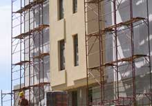
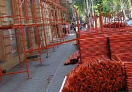
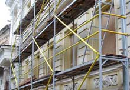
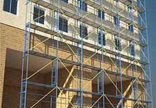
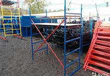
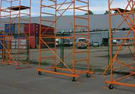

Строительные леса

Рамные строительные леса (далее леса рамные) предназначены
для проведения отделочных и ремонтных работ на фасадах зданий, а также для оштукатуривания зданий.Леса рамные представляют собой пространственную каркасно-ярусную систему, смонтированную из трубчатых элементов: стоек, рам, продольных и диагональных связей, соединяемых в процессе монтажа …
Подробно

Подробно
Крестовинные строительные леса
Приставные крестовинные строительные леса ЛСПШ-К 2000, предназначены для проведения отделочных и ремонтных работ на фасадах зданий и каменной кладки, для размещения рабочих, материалов, инструмента и приспособлений непосредственно в зоне производства строительно-монтажных работ. Строительные леса могут применяться для зданий сложной конфигурации как в плане, так и по высоте, а также при выполнении ремонтных и отделочных работ внутри зданий и сооруженийПодробно
Свободностоящие строительные леса
Свободностоящие строительные лес предназначены для проведения отделочных и ремонтных работ, как на фасадах зданий, так и внутри помещений. Строительные леса представляют собой каркасную пространственную систему, изготовленную из трубчатых элементов стоек, балок, стяжек, диагоналей, опор и др. Соединение элементов лесов осуществляется с помощью фиксаторов жёстко закреплённых на балках, стяжках и диагоналях …Подробно
Модульные строительные леса крепятся к стене с помощью захватов, соединяемых с закладными элементами в стенах здания. Особенности: быстрый монтаж\демонтаж конструкции; надежность крепления; высокой несущей способности; отсутствие мелких соединительных элементов, которые легко теряются; минимальное применение дополнительных и специальных элементов при монтаже лесов любой сложности …
Подробно

Подробно
Опорные облегченные строительные леса
Леса опорные предназначены (далее леса) для установки опалубочных балок в промышленном и гражданском строительстве при высоте установки опалубкиПодробно
Подмости передвижные предназначены для проведения монтажных, отделочных и ремонтных работ на фасадах зданий и в помещениях на высоте до 3,6м, как на ровной поверхности, так и на лестничных маршах.
Подробно

Подробно
Вышка-тур представляет собой каркасную пространственную систему,
изготовленную из трубчатых элементов стоек, стяжек, диагоналей, перил, несущих балок,
опирающихся на катки с тормозами, и имеющих домкраты на выдвижных балках, а также мостикарабочей площадки, оснащённой настилом и люком.
Подробно

Подробно
Передвижная сборно-разборная вышка облегченная (тура) предназначена для производства монтажных, ремонтных и отделочных работ, как снаружи, так и внутри зданий, а также размещения рабочих и материалов непосредственно в зоне работ.
Передвижная вышка представляет собой пространственную конструкцию башенного типа из плоских лестниц, имеющих три ступени.
Подробно

Подробно
Наша компания предоставляет услуги аренды облегченных, рамных, модульных, ригельных и свободностоящих строительных лесов, а также передвижных строительных вышек тур и передвижных подмостей. Мы работаем как с крупными организациями, так и частными лицами. Возможны различные системы оплаты.
Подробно
Подробно